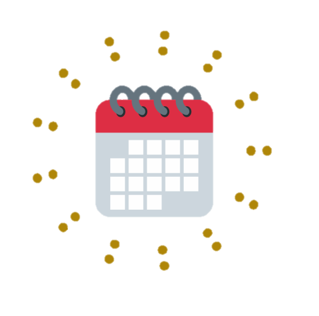

<!--
  Generated template for the EventPage page.

  See http://ionicframework.com/docs/components/#navigation for more info on
  Ionic pages and navigation.
-->
<ion-header>

  <ion-navbar>
      <button ion-button menuToggle>
          <ion-icon name="menu"></ion-icon>
    </button>
    <ion-title>Event</ion-title>

    <ion-buttons end>
        <button ion-button icon-only (click)="showPrompt()">
          <ion-icon name="contact"></ion-icon>
        </button>
      </ion-buttons>

  </ion-navbar>

</ion-header>


<ion-content padding>

    <ion-card>
        
        <ion-item>
          <ion-icon name="ionic" item-start large></ion-icon>
          <h2>Event Name</h2>
        </ion-item>

        <ion-item>
          <p>Created By: Username</p>
        </ion-item>

        <ion-item>
            <ion-icon name="time" theme="assertive" item-start large></ion-icon>
            <h2>13:00 - 20:00</h2>
        </ion-item>
        
        <ion-item>
            <div text-center>
                <button ion-button block clear icon-end (click)="details()">View Details
                    <ion-icon  name="arrow-forward"></ion-icon>
                </button>
            </div>
        </ion-item>

        <!--  -->
      
      
      </ion-card>

      <ion-fab right bottom>
          <button ion-fab color="primary" (click)="newEvent()"><ion-icon name="add"></ion-icon></button>
      </ion-fab>

</ion-content>
